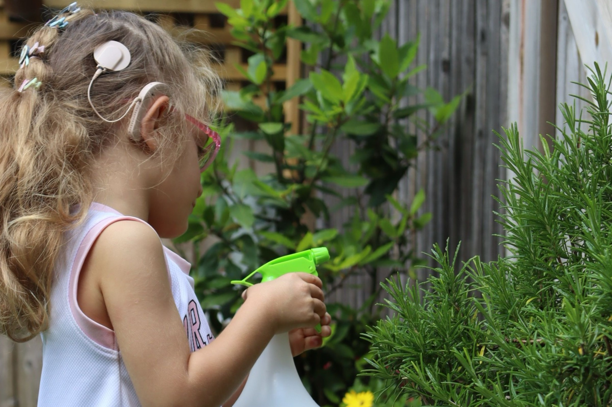
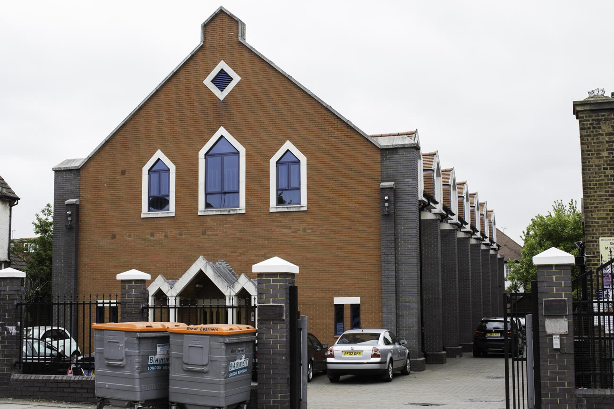
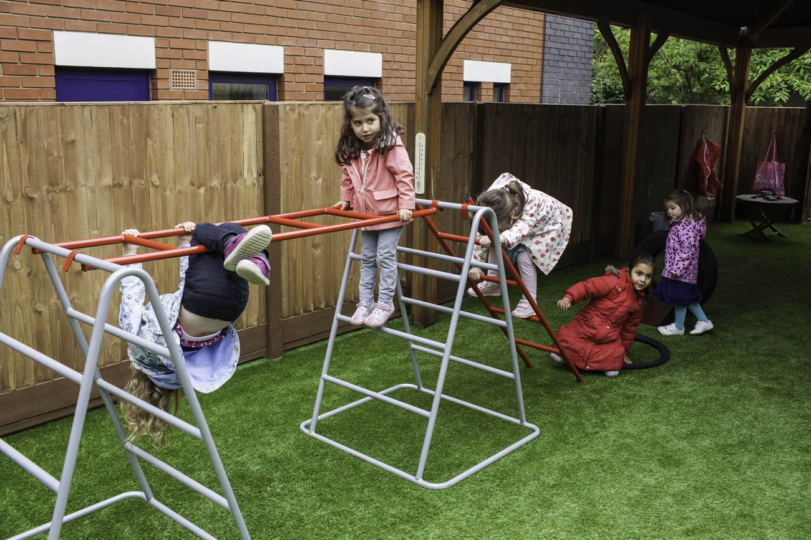

The Riding · Golders Green NW11
A warm, close-knit Montessori start for your child
Great Learners is the Golders Green branch of the Learners Montessori family — a cosy, Ofsted Outstanding nursery just off the High Street, welcoming children from 6 months to 5 years since 2007.


About Great Learners
Our third nursery, built on the same Montessori foundation
Great Learners opened in September 2007, following the success of our sister nurseries in Kingsbury and Edgware. We're tucked just off Golders Green High Street, in a cosy, close-knit setting that welcomes up to 65 children from 6 months to 5 years old.
Every child is assigned a key worker, with regular observations and development reports sent straight to your inbox — so you always know how your child is growing, not just at pickup.
Explore our nurseryA day at Great Learners
Montessori learning, woven through every day
Structured independence, real-world materials, and enough joyful extras that the week never feels the same twice.
Practical life & sensorial
Real Montessori materials — pouring, sorting, stacking — that build concentration and independence at each child's own pace.
Language, numeracy & French
A cosy library corner, early literacy and number work, plus French lessons woven into the weekly rhythm.
Dance, yoga & music
Regular dance, active play and calming yoga sessions, alongside music and singing — Fun Fridays are a firm favourite.
Garden & day trips
A shared enclosed garden for outdoor play and circle time, plus day trips and themed weeks — Dinosaur Week is a classic.
Three rooms, one community
Classrooms for every stage

Baby Room
Low furniture, open play areas and natural materials for safe, self-guided exploration.

Toddlers
A cosy library and Montessori-focused play zones toddlers can choose from independently.

Pre-school
A spacious, open classroom preparing children for school with confidence and independence.
We couldn't be happier with our experience at Great Learners. From the moment we walked in, we felt welcomed and reassured by the warm and friendly staff… our little one has blossomed in their care, making new friends and learning new skills every day.
Dimpy SatijaParent, Great Learners
Come and see for yourself
Book a visit to Great Learners
Come and see the classrooms, meet the team, and ask us anything — no obligation, just a cup of tea and an honest look around.